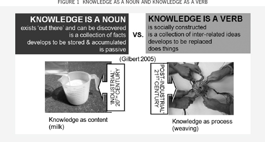
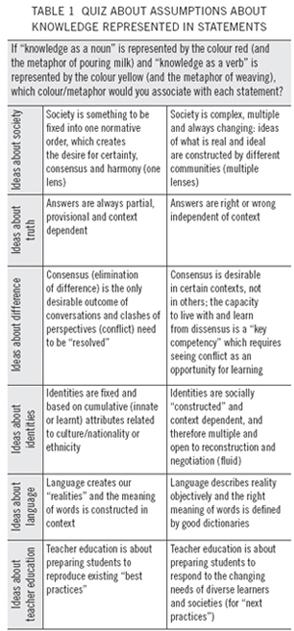
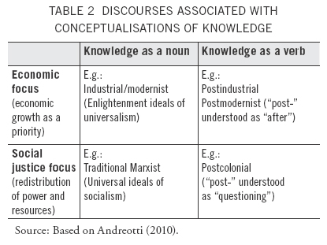

Hornby High School’s journey so far
VANESSA ANDREOTTI AND KAREN WHEELER
KEY POINTS
• In developing a programme to shift staff towards being learners themselves, Hornby High School partnered with a Teaching and Learning Research Initiative project. Part of this partnership was a professional learning day for teachers to reflect on assumptions about what knowledge is.
• The professional learning day used two “conceptual tools”, or thinking activities, based on exploring Gilbert’s (2005) distinction between “knowledge as a verb” and “knowledge as a noun”.
• In the teachers’ responses to the conceptual tools, they identified tensions between the theory and implementing it in practice, and tensions with the expectations of students, the school system and society.
• Responses also showed the difficulty of getting to grips with the distinction between absolute relativism (“answers can never be wrong”) and contextual relativism (“there are right and wrong answers in context”).
• This critical engagement with new ideas, and resultant cognitive dissonance with existing beliefs, are key to transforming thinking—and therefore teaching.
Professional development of teachers as autonomous learners is crucial to the transformation to 21st century teaching and learning. Hornby High School invited a Teaching and Learning Research Initiative project to participate in their programme to establish “teachers as learners”, including holding a professional learning day that challenged teachers to reflect on their underlying assumptions about knowledge and learning. This article describes the activities from the day and some of the teachers’ responses.
This article explores a developing partnership between a school and a research team involved in a Teaching and Learning Research Initiative (TLRI) project. The TLRI project focuses on shifts in conceptualisations of knowledge and learning in the introduction of The New Zealand Curriculum (Ministry of Education, 2007) in teacher education. The first part of the article describes the context of the research project and the conceptual tools that were used in the work with teachers in the school. The second part of the article provides a description of the context of the school and of the partnership. The third part offers a brief analysis of responses from staff to the conceptual tools.
The starting point of the TLRI project is the current educational literature that emphasises that societal changes in the “knowledge society” and postmodernity have significant implications for educational agendas. In particular, that there is an urgent need to reconceptualise knowledge and learning in educational policies and practices in the 21st century (see Andreotti & Souza, 2008; Cope & Kalantzis, 2000; Gee, 2003; Gilbert, 2005; Hargreaves, 2003; Lankshear & Knobel, 2003; Organisation for Economic Co-operation and Development, 2000; UNESCO, 2005).
In an article reporting on a TLRI research project conducted at Alfriston College, Hipkins, Shanks and Denny (2008) indicate that school reforms to develop “21st century learners” will not be successful if traditional assumptions about learning and teaching remain unchanged. Such assumptions rely on conceptualisations of knowledge (Gilbert, 2005) that also need to be questioned and reconstructed if schools are to engage with the complexity, uncertainty and diversity of “21st century” global contexts (Andreotti & Souza, 2008).
Gilbert (2005) summarises a wider debate about knowledge happening in several disciplines. She presents a distinction between knowledge conceptualised as a verb and knowledge conceptualised as a noun. She frames knowledge within “industrial thinking” as a thing (a noun) or a collection of facts that exist “out there” to be discovered and as something that happens in individual experts, that is cumulative, that develops to be stored and that is passive. Gilbert’s conceptualisation of knowledge within “knowledge society thinking” presents knowledge as a process (a verb), a collection of interrelated ideas that are socially constructed and as something that happens in teams, that is developed on an “as-and-when-needed” basis, that develops to be replaced and that is active (i.e., it does things).
The professional development of teachers as autonomous learners is key to changing conceptualisations of knowledge, and the transformation to 21st century teaching and learning, and it provides the basis for the partnership and debate described in this article.
This project maintains that, whether or not teachers agree with the assumptions of this literature, there is an urgent need for critical engagement (as opposed to “uncritical engagement” or “critical disengagement”) with these theoretical debates so that teachers are better equipped to make informed choices in complex professional contexts of growing diversity and uncertainty. This project draws on the New Zealand Best Evidence Synthesis of teacher professional learning and development (Timperley, Wilson, Barrar, & Fung, 2007) as it addresses the need for theory engagement (p. 197), the integration of theory and practice (p. 169) and the creation of dissonance with current positions in the learning process (p. 89). These aspects are key in supporting teachers to envision pedagogical practices that address the complexities of living and learning in current times for the 21st century.
The project was funded by the Ministry of Education’s TLRI in 2009 and 2010. It examines shifts in the conceptualisation of knowledge and learning in learning outcomes and course design in nine different contexts of initial and inservice teacher education. The overall project explores what would be effective in shifting teachers’ conceptualisations of knowledge, and how these shifts affect the way teachers interpret The New Zealand Curriculum (Ministry of Education, 2007).
In our work with teacher educators and schools, the TLRI project used and created a number of conceptual and pedagogical tools.
The pedagogical tools have two objectives: to bridge understandings in relation to theoretical debates and to create a new way of imagining and talking about new possibilities for thinking and practices in education. These conceptual/pedagogical tools were designed in a way that would:
• enable educators to engage with a level of complexity in the debate where different perspectives are contemplated
• address the interface between mainstream and emergent thinking, making connections with pedagogical practices
• affirm their partial and limited nature (i.e., the fact that they are also presenting a “perspective”) and invite critical dialogue—encouraging educators to engage critically with the tool itself in relation to their personal and professional contexts
• encourage educators to “think otherwise” (beyond what is presented in the tool itself) and to find their own voices in the debate (Andreotti & Souza, 2008).
The first conceptual tool discussed in this article uses Gilbert’s distinction between “knowledge as a verb” and “knowledge as a noun” and associates these two conceptualisations with two colours and two metaphors: the conceptualisation of knowledge as a noun is associated with the colour red and the metaphor of a measuring jug being filled with milk. The milk symbolises knowledge as content, the jug symbolises the mind and the act of pouring, teaching. The second conceptualisation of knowledge (as a verb) is associated with the colour yellow and the metaphor of weaving a basket: the threads are situated knowledges from the weavers, the act is collective and knowledge is not what is in the basket, but the weaving itself. Each basket is woven for a specific purpose, and a different context requires new weaving and a new basket (see Figure 1). These associations were introduced to create connections that could facilitate quick memory retrieval (in the case of the different colours, which were selected randomly) and create a sense of the concepts at work (in the case of the metaphors representing different actions) when teachers were invited to engage with the implications of shifting conceptualisations of knowledge applied in other areas.
As part of the engagement with the conceptual tool, teachers are invited to do a short quiz where they need to justify their choice of which of the assumptions about knowledge (as a noun or verb, red or yellow, pouring milk or weaving) stand behind statements on eight different themes related to society and education. The quiz is presented in Table 1.


Teachers are invited to justify their answers and explore the implications of the exercise in terms of identifying how belief systems open and/or limit choices and opportunities for different practices. The “yellow thinking” or “yellow zone” is not presented as “the right answer”, but as an emerging thread in the context of education—as an option whose application needs to be considered “in context”.
In order to take teachers a step further in engaging with the complex and contested nature of the red and yellow debate, we developed a second conceptual tool. This is a matrix of different discourses that is used to close the presentation. This matrix associates “knowledge as a noun” (red) with both modernist and Marxist aspirations and debates and “knowledge as a verb” with postcolonial and postmodernist aspirations and debates. The matrix also represents postmodernist and modernist discourses as being driven by an economic imperative, while Marxist and postcolonial discourses would be based on a social justice agenda (i.e., redistribution, recognition and relationality). This matrix is represented in Table 2.

The TLRI project’s “red” and “yellow” pedagogical tool was presented in a keynote address at the Teachers Making a Difference conference organised by UC Education Plus in July 2009.
Hornby High School was not one of the nine contexts involved in the TLRI project, but teachers in the school’s Professional Learning Committee (PLC) saw this conference presentation. They invited the presenter, Dr Vanessa Andreotti, to be involved in the first teacher-only day they organised, triggering a partnership and association between the TLRI project and Hornby High School.
Hornby High School is a small, multicultural school on the edge of an industrial area on the western outskirts of Christchurch. Hornby High School was established in 1975 after vigorous community requests for a local secondary school. The school continues to have significant community support and, reflecting this, Hornby High School has a distinctive identity, based on strong family and community relationships.
Hornby High School is a decile 3 school with 480 students. In January 2009 the school started a three-year professional development project with “Education Plus” at Canterbury University. Hornby High School has a PLC, which consists of eight teachers who represent six of the eight learning areas in The New Zealand Curriculum. The PLC was designed to have a cross section of teachers at various stages in their teaching careers. In 2008, a decision was made to change the label “professional development” to “professional learning”, which is perceived to reflect a drive towards “21st century thinking” and the framework of The New Zealand Curriculum (Ministry of Education, 2007):
We wanted the emphasis to be on learning. We want our students to become better learners and to build a culture at Hornby High School that nurtures this. For this to happen we must recognise that the teacher is also the learner in this process.
In the planning of their first teacher-only day, the PLC wanted to emphasise the idea of teachers as learners and to challenge the skills-based approach to professional development that had traditionally been adopted in the school. This approach prioritised a collective approach to changing practices in the classrooms. The intention of the committee was to give teachers the opportunity to think at their own intellectual level and ask “why?”.
The school invited Dr Andreotti to start the day by talking to the teachers about how changes in society and learners’ profiles are causing changes in the ways people conceptualise knowledge, learning and education. The school wanted to create a space where teachers could examine their own thinking about knowledge, learning and pedagogy and consider new possibilities for classroom practices, with a special focus on responses to diversity. Vanessa was asked to present the “red” and “yellow” conceptual tool to the teachers, and this was followed by using the second tool to deepen thinking. The briefing was to invite teachers to think deeper about the bigger picture of the implementation of the new curriculum. The aim of the PLC was to shift the traditional instrumental approach of “how, what and when we are going to implement The New Zealand Curriculum?” towards an approach that would help the school team to reflect on what they do, why they do those particular things and how this links to pedagogical theory and The New Zealand Curriculum. This emphasis on theory is supported in the BES and in adult learning principles that highlight the importance of “links to practice, involvement in decision making, reflection, dialogue, application, support offered by significant others, and the role of theory” (Lovett & Verstappen, 2004, p. 31).
There was some uncertainty around how staff would respond to this change of approach. The committee acknowledged the risks involved in directing the use of teachers’ learning time towards something that may not have been perceived as a priority. Nevertheless, in the spirit of supporting the construction of learner identities amongst teachers, the committee considered the risk worth taking and aimed for a balance of approaches for the day. The final plan for the day started with the more challenging session for thinking about society, learning and pedagogy through the TLRI project’s conceptual tools, and moved towards more practical activities related to curriculum implementation and ICT.
Feedback from staff in their evaluation of the day was very positive. Teachers had the opportunity to ask questions about both tools. The theme of postcolonialism generated debate and seemed to capture the imagination of the group. Teachers described the session for thinking and the engagement with the conceptual tool as “stimulating” and “thought provoking”. Another recurrent comment was that “it was good for the whole staff to be learning together”.
Given the level of interest and engagement of the teachers with the concepts of the TLRI project, especially the conceptual tools explored in the session, Vanessa was invited to give another presentation in the next teacher-only day. She presented other conceptual tools based on critical interpretations of the work of Magolda (1992) on models of epistemological development. Vanessa offered an open invitation to teachers who wanted to look at their practice to work with the project team in developing their own case studies related to shifts in knowledge and learning in 2010. The offer was taken up by four staff members, including the deputy principal. This was the start of the second phase of this partnership, which is outlined in the conclusion.
As a follow up to the session where the conceptual tools were presented, teachers were invited to respond to the implications of conceptualisations of knowledge as a noun or as a verb by placing comments on posters around the room under three headings: “One question I have”, “Two things I have learnt” and “The muddiest point”. The next section analyses these responses.
A strong thread in the responses in relation to new learning was the idea that contexts may shape knowledge production and identity construction:
[I have learnt that] cultures, relationships and cultural identities are driven by context.
Context dependency and relativity can be understood in many different ways. There is a difference between saying that “answers can never be wrong” (absolute relativism) and saying that “there are right and wrong answers in context” (contextual relativism). If relativity and context dependency were new formal learning for some teachers, it is natural that, like a pendulum, many teachers may interpret the social construction of truth as absolutely relative, as it could be interpreted in these quotes:
[I have learnt that] answers depend on context—no right or wrong.
[I have learnt that] answers are not wrong, just different.
Some teachers focused on the implications of context dependency for relationships. It could be argued that the transformation of relationships is where the greatest potential of having an understanding of multiple interpretations lies. This transformation is related to one’s ability to see things through the eyes of others and to be open to listen:
[I have learnt] not to think that my way is the best way.
[I have learnt that] difference is a source of learning.
[I have learnt about] acknowledging multiple perspectives.
This relativisation of one’s perspective and questioning of one’s assumptions can lead to a better understanding of students’ diverse learning needs and the role of schools in responding to those:
[I have learnt that] students don’t need to write to learn and take in information.
[I have learnt that] literacy is not the most important thing in education.
[I have learnt that] The New Zealand Curriculum moves from knowledge as a fixed set of information to a process of learning.
[I have learnt about the] shift in educational theory—make learners central.
[Muddiest point:] Self-motivation to learn seems to be the key. What can we do about this? We need to think about how to motivate our students.
The relativisation and contextualisation of knowledge can also have a transformative and often liberating effect when it supports the collapse of traditional teacher identities based on the idea of teachers as “vessels of knowledge” (and the anxieties of having to know everything):
[I have learnt that] it is ok to change my view several times through life, as my ideas on things change.
[I have learnt about] complexity—the more you learn the more there is to learn—reinforced.
[I have learnt that] not knowing and still learning is ok.
Although this process was new for some teachers, others were aware of similar debates in other areas:
[I have learnt that] postmodernisation is coming to town.
[I have learnt that] education is now moving into the postmodern era. This is where I went wrong in my marriage (seeing red is not a good thing).
[I have learnt that] the subjectivity/objectivity debate is still raging and will forever.
Translations between theory and practice—or ideal scenarios for “yellow” learning and classroom realities— were also, and understandably, a major preoccupation of teachers:
[Muddiest point:] Translating ideal to classroom reality.
[One question I have:] How to put this in practice in the classroom?
Concerns about the feasibility of the approach were expressed in different ways. Some teachers focused on organisation and methodology:
[One question I have:] How can I use this approach five times a day with different students/classes?
[One question I have:] How can yellow be incorporated into discipline systems?
Some teachers focused on the potential tensions of introducing the idea of “relative knowledge” in disciplines that were based on “facts”:
[One question I have:] How do we incorporate the yellow zone into the teaching environment where facts are required?
[One question I have:] How does the yellow idea fit into a very fact-based subject like maths?
Some raised issues and contradictions related to assessment practices:
[One question I have:] How does it relate to assessment?
[Muddiest point:] Assessment structure does not fit yellow thinking.
[Muddiest point:] ‘Answers are always partial, provisional and context dependent’—linking this to assessment.
Others seemed concerned with the professional skills necessary to make choices in complex, diverse and changing contexts:
[Muddiest point:] How to recognise the best approach to our teaching?
[Muddiest point:] Do we stay red and teach yellow or go yellow and teach red?
Teachers raised legitimate issues and questions related to the certainty of knowledge, to the desirability of order and stability and to dimensions of the schooling system that could represent a barrier to implementation of “yellow thinking”. One teacher questioned whether the idea of “multiple answers dependent on context” was applicable in all cases:
[Muddiest point:] Concerning knowledge—is it always contestable? In some cases isn’t there sometimes only one answer? eg the capital of NZ is Wellington.
A few teachers expressed caution in relation to a perceived call to embrace diversity and multiplicity. This seemed to clash with aspirations for certainty, order and control. Relative and contextual knowledge, from this perspective, could be associated with absolute relativism—where “everything goes”:
[One question I have:] People have a desire for security which comes, in part, from certainty. Are we opening up a more chaotic, disrupted world where ‘anything goes’?
[One question I have:] Does society function when everyone is a free thinker? Doesn’t society require leaders who tell people what to think?
[Muddiest point:] What societies are we dealing with? Cultures collide in education.
[I have learnt that] NZ education is treading dangerous waters.
A number of teachers raised concerns about dimensions of the schooling system that could serve as a barrier to thinking disciplines, processes and relationships through the “yellow zone”. The constraints of the physical environment of schools was one of these barriers:
[One question I have:] How quickly will the physical restraints of school classrooms, desks, not enough computers change to reflect the new imperatives?
One teacher raised concerns about possible restrictions on intellectual autonomy being placed by schools on teachers: [One question I have:] What does the teacher do who is forced (by the nature of the school they are in) to promote certain perspectives?
One teacher focused on the difficulty of “walking the talk” of embracing diversity when, in her view, teachers would believe and say they were doing it while they were still blind to their own embedded assumptions of superiority and prejudices:
[One question I have:] How will [things] be different if we believe/teach that we are acknowledging diversity when we are all limited in our experiences, arrogance and ‘save the world’ mentality?
One teacher identified student resistance to thinking in different ways as a major obstacle:
[One question I have:] How do we bridge the intellectualism of learning as a verb to students’ expectations of ‘just give me the right answer, Miss’.
One teacher was concerned that, by valuing different knowledges, teachers could be disadvantaging students as it would go against societal systems and expectations:
[Muddiest point:] Society does value certain skills and ways of knowledge more highly.
Similarly, another teacher highlighted the paradox of preparing students to be operational in a specific society (which involves accepting social rules) at the same time that teachers prepare them to challenge, change and shape these social rules:
[One question I have:] How do you teach students not to be just part of a society, but to go and shape society?
The cognitive dissonance expressed through these conflicts and paradoxes can be interpreted as one of the most important aspects of learning processes related to shifts in teacher belief systems (see, for example, Boler, 1999; Britzman, 2006).
This article outlines the beginning of a partnership established between Hornby High School and a TLRI project team working with teacher education. The central theme of the partnership was the professional identity of teachers as autonomous learners. The article describes the conceptual tools used in a professional learning day that invited teachers to engage with different conceptualisations of knowledge and learning and their implications in relation to ideas of society, identity, disciplines, conflict, teacher education and truth. In the last part of the article we offered a brief analysis of teachers’ responses to the ideas discussed in the conceptual tools. In emphasising the importance of addressing the challenges of learning in the 21st century, Hornby High School “walked the talk” of educational literature that emphasises the need for teachers to engage with complexity, uncertainty and diversity as learners before they can design learning processes where students can do the same. This requires a move from a focus on changing classroom practices (through new structures and schemes) towards the starting point of teacher thinking and knowing. This represents a major challenge and risk given the increasing professional pressures and responsibilities placed on teachers’ shoulders. However, the responses of the teachers confirm that a space for teacher intellectual learning can be both relevant and motivating: a risk worth taking.
Hornby High School’s partnership with the TLRI research team continues through the work of three teachers. They have worked together during 2010 to develop case studies about their explorations in the “yellow” zone in their teaching. They collectively identified that student resistance to yellow thinking, based on red perceptions of school and red relationships with peers, was the most significant barrier they wanted to address in their teaching in 2010. They have developed research plans around the same thread in an “orange zone”, in the interface between yellow and red, with a view to assist learners in moving towards the possibility of yellow knowing and learning. They have framed the orange space as one where students learn to feel safe to experiment with different identities at school. They are discussing the application of common exercises to observe students’ attitudes towards ambivalence and relational thinking. Their case studies will offer narratives of their learning processes—including their successes and failures in trying to create these spaces for the students.
This article is written in the context of the research project Shifting Conceptualisations of Knowledge and Learning in the Introduction of The New Zealand Curriculum (Ministry of Education, 2007) in Initial and Continuing Teacher Education, funded by the Teaching and Learning Research Initiative of the Ministry of Education. The authors are grateful to the funders for the financial support received in this project.
Andreotti, V. (2010). Global education in the “21st century”: Two different perspectives on the “post-” of postmodernism. International Journal of Development Education and Global Learning, 2(2), 5–22.
Andreotti, V., & Souza, L. (2008). Global learning in the knowledge society: Four tools for discussion. Journal of International Educational Research and Development Education, 31, 7–12.
Boler, M. (1999). Feeling power: Emotions and education. New York: Routledge.
Britzman, D. (2006). Novel education: Psychoanalytic studies of learning and not learning. New York: Peter Lang.
Cope, B., & Kalantzis, M. (2000). Multiliteracies: Literacy and learning and the design of social futures. London: Routledge.
Gee, J. P. (2003). What video games have to teach us about learning and literacy? New York: Palgrave Macmillan.
Gilbert, J. (2005). Catching the knowledge wave?: The knowledge society and the future of education. Wellington: NZCER Press.
Hargreaves, A. (2003). Teaching in the knowledge society. New York: Teachers College Press.
Hipkins, R., Shanks, L., & Denny, M. (2008). Early experiences of longer learning periods at Alfriston College. set: Research Information for Teachers, 1, 44–49.
Lankshear, C., & Knobel, M. (2003). New literacies: Changing knowledge and classroom learning. Buckingham, UK: Open University Press.
Lovett, S., & Verstappen, P. (2004). Improving teachers’ professional learning: The quality learning circle approach. New Zealand Journal of Educational Leadership, 19(2), 31–43.
Magolda, B. (1992). Knowing and reasoning in college students: Gender-related patterns in students’ intellectual development. San Francisco: Jossey Bass.
Ministry of Education. (2007). The New Zealand curriculum. Wellington: Learning Media.
Organisation for Economic Co-operation and Development. (2000). Knowledge management in information societies: Education and skills. Paris: Author.
Timperley, H., Wilson, A., Barrar, H., & Fung, I. (2007). Teacher professional learning and development: Best evidence synthesis iteration [BES]. Available from Education Counts: www.educationcounts.govt.nz/publications/series/2515
Trilling, B., & Hood, P. (2001). Learning, technology, and education reform in the knowledge age or “we’re wired, webbed, and windowed, now what?”. In C. Paechter, R. Edwards, R. Harrison, & P. Twining (Eds), Learning, space and identity (pp. 7–31). London: Paul Chapman.
UNESCO. (2005). UNESCO World Report: Towards knowledge societies. Paris: Author.
VANESSA ANDREOTTI is Professor of Global Education at the University of Oulu, Finland.
Email: vanessa.andreotti@oulu.fi
KAREN WHEELER is Deputy Principal of Hornby High School Te Huruhuru ao o Horomaka.
Email: wk@hornby.school.nz